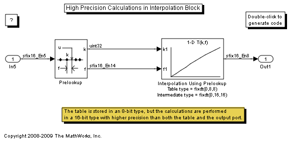

High Precision Calculations in Interpolation Block
The Interpolation Using Prelookup block allows the data type for intermediate results to be set.
In this model, the table is stored using an 8-bit data type, and the calculations are performed using a 16-bit data type. The default Intermediate results data type is Inherit: Inherit via internal rule that tries to maximize the precision of the intermediate results.
To see this in the generated code, open the model and build it.
